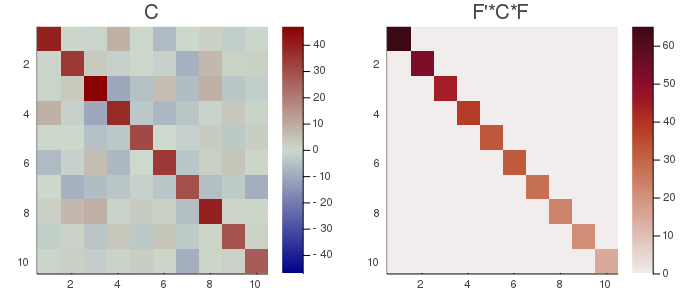

PCA
Principal Component Analysis (PCA) is obtained by eigenvalue-eigenvector decomposition. It was first conceived by Karl Pearson (1901)🎓 as a way to fit straight lines to a multidimensional cloud of points. It corresponds to the situation $m=1$ (one dataset) and $k=1$ (one observation).
Let $X$ be a $n⋅t$ data matrix, where $n$ is the number of variables and $t$ the number of samples and let $C$ be its $n⋅n$ covariance matrix. Being $C$ a positive semi-definite matrix, its eigenvector matrix $U$ diagonalizes $C$ by rotation, as
$U^{H}CU=Λ$. $\hspace{1cm}$ [pca.1]
The eigenvalues in the diagonal matrix $Λ$ are all non-negative. They are all real and positive if $C$ is positive definite, which is assumed in the remaining of this exposition. The linear transformation $U^{H}X$ yields uncorrelated data with variance of the $n^{th}$ component equal to the corresponding eigenvalue $λ_n$, that is,
$\frac{1}{T}U^{H}XX^{H}U=Λ$. $\hspace{1cm}$ [pca.2]
In Diagonalizations.jl the diagonal elements of diagonalized matrices are always arranged by descending order, such as
$λ_1≥\ldots≥λ_n$. $\hspace{1cm}$ [pca.3]
Then, because of the extremal properties of eigenvalues (Congedo, 2013, p. 66; Schott, 1997, p. 104-128)🎓, the first component (row) of $U^{H}X$ holds the linear combination of $X$ with maximal variance, the second the linear combination with maximal residual variance and so on, subject to constraint $U^{H}U=UU^{H}=I$.
Let $σ_{TOT}=\sum_{i=1}^nλ_i=tr(C)$ be the total variance and let $\widetilde{U}=[u_1 \ldots u_p]$ be the matrix holding the first $p<n$ eigenvectors, where $p$ is the subspace dimension, then
$σ_p=\frac{\sum_{i=1}^pλ_i}{σ_{TOT}}=\frac{tr(\widetilde{U}^HC\widetilde{U})}{tr(C)}$ $\hspace{1cm}$ [pca.4]
is named the explained variance and
$ε_p=σ_{TOT}-σ_p$ $\hspace{1cm}$ [pca.5]
is named the representation error. These quantities are expressed in proportions, that is, it holds $σ_p+ε_p=1$.
The accumulated regularized eigenvalues (arev) are defined as
$σ_j=\sum_{i=1}^j{σ_i}$, for $j=[1 \ldots n]$, $\hspace{1cm}$ [pca.6]
where $σ_i$ is given by Eq. [pca.4].
For setting the subspace dimension $p$ manually, set the eVar optional keyword argument of the PCA constructors either to an integer or to a real number, this latter establishing $p$ in conjunction with argument eVarMeth using the arev vector (see subspace dimension). By default, eVar is set to 0.999.
Solution
The PCA solution is given by the eigenvalue-eigenvector decoposition of $C$
$\textrm{EVD}(C)=UΛU^{H}$.
It is worth mentioning that
$\widetilde{U}\widetilde{Λ}\widetilde{U}^H$,
where $\widetilde{Λ}$ is the leading $p⋅p$ block of $Λ$, is the best approximant to $C$ with rank $p$ in the least-squares sense (Good, 1969)🎓.
Constructors
Three constructors are available (see here below). The constructed LinearFilter object holding the PCA will have fields:
.F: matrix $\widetilde{U}$ with orthonormal columns holding the first $p$ eigenvectors in $U$, or just $U$ if $p=n$
.iF: the (conjugate) transpose of .F
.D: the leading $p⋅p$ block of $Λ$, i.e., the eigenvalues associated to .F in diagonal form.
.eVar: the explained variance [pca.4] for the chosen value of $p$.
.ev: the vector diag(Λ) holding all $n$ eigenvalues.
.arev: the accumulated regularized eigenvalues in [pca.6].
Diagonalizations.pca — Function(1)
function pca(C :: SorH;
eVar :: TeVaro = nothing,
eVarMeth :: Function = searchsortedfirst,
simple :: Bool = false)
(2)
function pca(X::Mat;
covEst :: StatsBase.CovarianceEstimator = SCM,
dims :: Into = ○,
meanX :: Tmean = 0,
wX :: Tw = ○,
eVar :: TeVaro = ○,
eVarMeth :: Function = searchsortedfirst,
simple :: Bool = false)
(3)
function pca(𝐗::VecMat;
covEst :: StatsBase.CovarianceEstimator = SCM,
dims :: Into = ○,
meanX :: Into = 0,
eVar :: TeVaro = ○,
eVarMeth :: Function = searchsortedfirst,
simple :: Bool = false,
metric :: Metric = Euclidean,
w :: Vector = [],
✓w :: Bool = true,
init :: SorHo = nothing,
tol :: Real = 0.,
verbose :: Bool = false)Return a LinearFilter object:
(1) Principal component analysis with real or complex covariance matrix C as input.
C must be flagged as Symmetric, if real, or Hermitian, if either real or complex, see data input.
eVar and evarMeth are keyword optional arguments for defining the subspace dimension $p$ using the .arev vector given by Eq. [pca.6]. The default values are:
eVar=0.999evarMeth=searchsortedfirst
If simple is set to true, $p$ is set equal to $n$ and only the fields .F and .iF are written in the constructed object. This option is provided for low-level work when you don't need to define a subspace dimension or you want to define it by your own methods.
(2) Principal component analysis with a real or complex data matrix X as input.
CovEst, dims, meanX, wX are optional keyword arguments to regulate the estimation of the covariance matrix of X. See covariance matrix estimations.
Once the covariance matrix estimated, method (1) is invoked with optional keyword arguments eVar, eVarMeth and simple.
(3) Principal component analysis with a vector of real or complex data matrices 𝐗 as input.
CovEst, dims and meanX are optional keyword arguments to regulate the estimation of the covariance matrices for all data matrices in 𝐗. See covariance matrix estimations.
A mean of these covariance matrices is computed using optional keywords arguments metric, w, ✓w, init, tol and verbose. See mean covariance matrix estimations. By default, the arithmetic mean is computed.
Once the mean covariance matrix estimated, method (1) is invoked with optional keyword arguments eVar, eVarMeth and simple.
See also: Whitening, CSP, MCA, AJD.
Examples:
using Diagonalizations, LinearAlgebra, PosDefManifold, Test
# Method (1) real
n, t=10, 100
X=genDataMatrix(n, t)
C=(X*X')/t
pC=pca(Hermitian(C); simple=true)
# or, shortly
pC=pca(ℍ(C); simple=true)
# Method (1) complex
Xc=genDataMatrix(ComplexF64, n, t)
Cc=(Xc*Xc')/t
pCc=pca(Hermitian(Cc); simple=true)
# Method (2) real
pX=pca(X; simple=true)
@test C≈pC.F*pC.D*pC.iF
@test C≈pC.F*pC.D*pC.F'
@test pX≈pC
# Method (2) complex
pXc=pca(Xc; simple=true)
@test Cc≈pCc.F*pCc.D*pCc.iF
@test Cc≈pCc.F*pCc.D*pCc.F'
@test pXc≈pCc
# Method (3) real
k=10
Xset=[genDataMatrix(n, t) for i=1:k]
# pca on the average covariance matrix
p=pca(Xset)
# ... selecting subspace dimension allowing an explained variance = 0.5
p=pca(Xset; eVar=0.5)
# ... averaging the covariance matrices using the logEuclidean metric
p=pca(Xset; metric=logEuclidean, eVar=0.5)
# ... giving weights `w` to the covariance matrices
p=pca(Xset; metric=logEuclidean, w=abs2.(randn(k)), eVar=0.5)
# ... subtracting the mean
p=pca(Xset; meanX=nothing, metric=logEuclidean, w=abs2.(randn(k)), eVar=0.5)
# pca on the average of the covariance matrices computed along dims 1
p=pca(Xset; dims=1)
# explained variance
p.eVar
# name of the filter
p.name
using Plots
# plot regularized accumulated eigenvalues
plot(p.arev)
# plot the original covariance matrix and the rotated covariance matrix
Cmax=maximum(abs.(C));
h1 = heatmap(C, clim=(-Cmax, Cmax), yflip=true, c=:bluesreds, title="C");
D=pC.F'*C*pC.F;
Dmax=maximum(abs.(D));
h2 = heatmap(D, clim=(0, Dmax), yflip=true, c=:amp, title="F'*C*F");
📈=plot(h1, h2, size=(700, 300))
# savefig(📈, homedir()*"\Documents\Code\julia\Diagonalizations\docs\src\assets\FigPCA.png")
# Method (3) complex
k=10
Xcset=[genDataMatrix(ComplexF64, n, t) for i=1:k]
# pca on the average covariance matrix
pc=pca(Xcset)
# ... selecting subspace dimension allowing an explained variance = 0.5
pc=pca(Xcset; eVar=0.5)
# ... averaging the covariance matrices using the logEuclidean metric
pc=pca(Xcset; metric=logEuclidean, eVar=0.5)
# ... giving weights `w` to the covariance matrices
pc=pca(Xcset; metric=logEuclidean, w=abs2.(randn(k)), eVar=0.5)
# ... subtracting the mean
pc=pca(Xcset; meanX=nothing, metric=logEuclidean, w=abs2.(randn(k)), eVar=0.5)
# pca on the average of the covariance matrices computed along dims 1
pc=pca(Xcset; dims=1)
# explained variance
pc.eVar
# name of the filter
pc.name